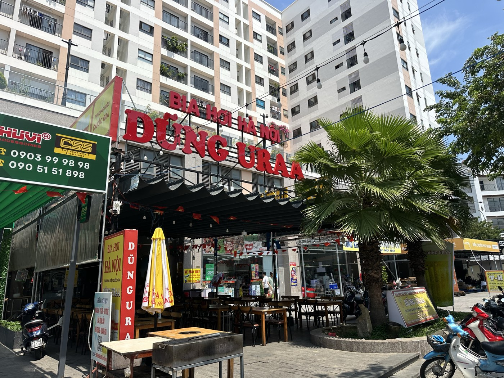

Tìm quán bia hơi Hà Nội ở Nha Trang: địa chỉ, giờ mở cửa và ba món nên gọi lần đầu
Nhiều người tìm “bia hơi Hà Nội Nha Trang” mà không biết chính xác quán ở đâu, mở cửa giờ nào, lần đầu tới nên gọi món gì. Bài này gom đủ những thứ cần biết trước khi ghé.

Biển hiệu DŨNG URAA - Bia Hơi Hà Nội, ngay mặt đường số 28, KĐT Phước Long.
Địa chỉ và cách đi
DŨNG URAA - Bia Hơi Hà Nội nằm tại Căn 07D, Tầng 1, Chung cư XH1 VCN Phước Long, Đường số 28, KĐT Phước Long, phường Nam Nha Trang, Khánh Hòa. Quán nằm ngay mặt đường, dễ nhận ra nhờ biển hiệu đỏ "Bia Hơi Hà Nội — DŨNG URAA" treo phía trên mái hiên.
Cách nhanh nhất là tìm trên Google Maps đúng tên "DŨNG URAA - Bia Hơi Hà Nội", hoặc bấm vào đây để mở chỉ đường trực tiếp.
Giờ mở cửa
Quán mở cửa 10h00 – 23h00, tất cả các ngày trong tuần, kể cả cuối tuần và ngày lễ. Khung giờ đông khách nhất thường từ 18h trở đi.
Ba món nên gọi lần đầu
Thực đơn có hơn 40 món, nhưng nếu lần đầu tới và chưa biết gọi gì, đây là ba món khách gọi nhiều nhất:
- Nem bùi Bắc Ninh — món khai vị kinh điển để đưa bia, vị chua nhẹ, giòn, đúng kiểu vỉa hè Hà Nội.
- Trâu gác bếp — thịt khô kiểu Tây Bắc, chấm cùng chẩm chéo, hợp nhâm nhi khi mới ngồi vào bàn.
- Dồi sụn heo chiên hoặc Cá kìm chiên giòn — hai món bán chạy nhất quán, giòn rụm, ăn kèm rau sống.
Và dĩ nhiên không thể thiếu một ly bia hơi Hà Nội — có bán theo ly, ca 2 lít hoặc tháp 3 lít cho bàn đông người. Giá các món tham khảo theo thực đơn tại quán, có thể điều chỉnh theo thời điểm — anh/chị nên hỏi lại khi gọi món.
Vì sao bia hơi phải uống trong ngày
Bia hơi khác bia đóng chai ở một điểm quan trọng: không qua tiệt trùng nhiệt nên giữ được vị tươi, nhưng cũng vì vậy mà phải uống trong ngày, không để qua đêm. Đây cũng là lý do quán nhập bia về mỗi ngày thay vì trữ sẵn số lượng lớn. Tôi đã viết riêng một bài về chuyện này, vì sao bia hơi phải uống ngay khi rót, nếu anh/chị muốn đọc thêm.
Một vài lưu ý khi ghé lần đầu
- Quán khá rộng, phù hợp nhóm đông, liên hoan công ty hay tiếp khách — nhưng giờ cao điểm cuối tuần nên gọi trước để giữ chỗ.
- Thực đơn in 4 ngôn ngữ Việt, Anh, Trung, Hàn — tiện nếu đi cùng khách nước ngoài.
- Quán phục vụ đồ uống có cồn cho khách từ 18 tuổi. Đã uống rượu bia, không lái xe.
Thông tin địa chỉ, giờ mở cửa và món ăn trong bài lấy từ thực đơn và thông tin chính thức của quán, cập nhật ngày 10/10/2026. Giá món có thể thay đổi theo thời điểm.
"Rồi, ngày mới tốt lành nhé."
Sống tử tế · Kiếm tiền hạnh phúc · Cho đi giá trị
Ghé DŨNG URAA tối nay?
Bia hơi Hà Nội chính gốc, mở cửa 10h–23h hằng ngày. Đặt bàn trước để chắc chỗ ngồi, nhất là cuối tuần.
Đặt bàn qua Zalo — 0869 668 638